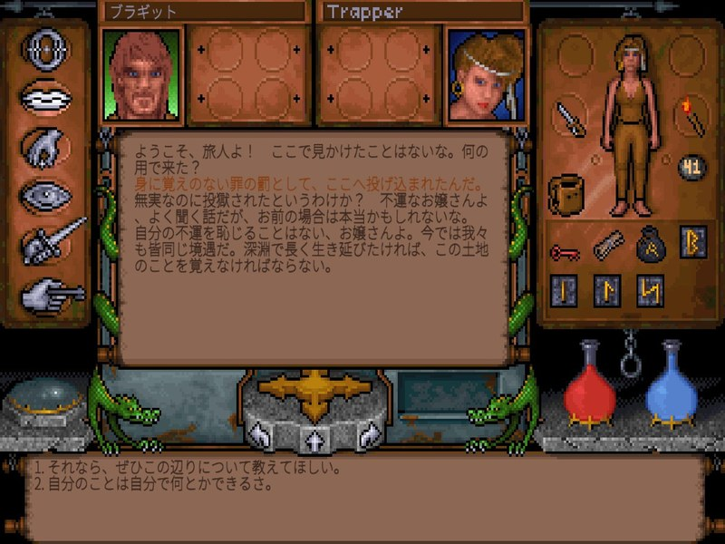
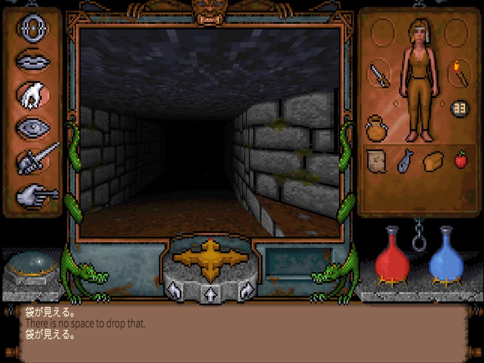
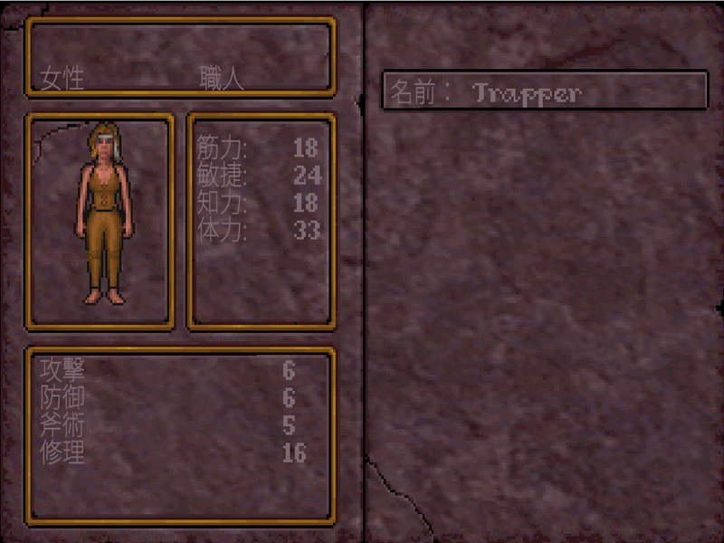

どんなゲーム？
ウルティマ アンダーワールドは、1992年に発表された、ウルティマの世界を舞台にしたダンジョン RPG です。
地下迷宮を一人称の 3D で自由に歩き回り、戦い、調べ、住人と話して進むゲームで、のちの多くの 3D ゲームに影響を与えました。
アルムリック男爵の娘アリエルがさらわれ、その場に居合わせたアバタールが犯人として捕らえられます。
男爵は、娘を連れ戻すまで戻ることは許さないとして、アバタールを地下の大迷宮「ステュジアン・アビス」へ投げ込みます。
そこはかつてカビラスという男が、さまざまな種族の暮らす理想の入植地を築こうとした場所でした。
カビラスの死後、争いと荒廃に沈んだ深淵の奥へ、アバタールはアリエルを探しに降りていきます。
剣や斧での戦いのほか、ルーン石を組み合わせて唱える魔法、地図への書き込み、言葉の通じない種族とのやりとりなど、深淵での暮らしそのものを味わうゲームです。
入れ方
- ダウンロードした
UltimaUnderworld_JP.zip を展開します。
- 出てきた
ウルティマアンダーワールド日本語化パッチ フォルダの中の UWJP.COM・UWJP.DAT・dosboxULTIMA1_single.conf を、ゲームのフォルダ（game.gog がある所）にコピーします。dosboxULTIMA1_single.conf は上書きしてください。
DOSBOX フォルダも、ゲームのフォルダの中の DOSBOX フォルダにコピーします（opengl32.dll と ultima_ja.ini が増えます）。- いつもどおり GOG Galaxy やショートカットから起動し、最初の画面（Ultima Underworld Launcher）で 1 を押します。
GOG.com の「Ultima Underworld 1+2」の第1作で使えます。ゲームのファイルは書き換えないので、外せば英語版に戻ります。
外し方
- ゲームのフォルダの
UWJP.COM と UWJP.DAT を消し、GOG Galaxy の「ファイルの検証/修復」で dosboxULTIMA1_single.conf を元に戻します。
DOSBOX フォルダに増えた opengl32.dll と ultima_ja.ini も消します。- セーブデータは英語版と共通です。日本語版と英語版を行き来して遊べます。
字の形
- 日本語の字は東雲フォント（12 ドット）で表示します。
DOSBOX フォルダの ultima_ja.ini の font= を misaki に書き換えると、美咲フォント（8 ドット）になります。
- 東雲フォントで描き直すのは、無地の背景に 1 色で書かれた字です。模様の上の字や、オープニングの大きな字幕は、美咲フォントの形のまま表示します。
- 起動設定で、画面をくっきり広げる表示（
glshader=sharp）にしています。
遊ぶときの注意
- 操作は英語版と同じです。キーの一覧はゲーム付属のマニュアルをご覧ください。
- キャラクターの名前は英字で入力します。
- 会話で言葉を入力する場面、合言葉、ルーンの名前、マントラは、謎解きのために英語のままです。リザードマンの言葉も原作のままです。
- タイトルのメニュー、オプションのボタン、地図などの絵に描かれた字は英語のままです。
- GOG.com 版のままの設定では、オープニングに字幕が出ません（英語版でも同じです）。
- GOG Galaxy がゲームを更新・修復すると、
dosboxULTIMA1_single.conf が元に戻ることがあります。そのときはもう一度上書きしてください。
別の遊び方: Underworld Revisited（Windows アプリ）
原作を Unity で作り直したオープンソースの再実装版「Underworld Revisited」に日本語の表示を加えたものでも遊べます。
現代式の操作や高画質の表示が選べ、メニューやヘルプまで日本語になっています。GOG.com 版のゲームのデータを読み込んで動きます。
ダウンロード（GitHub）

会話

地下迷宮

キャラクターの作成
入れ方
- Windows 10 以降の 64 ビット版と、DirectX 11 に対応したグラフィックカードが要ります。日本語は Windows に最初から入っているフォントで表示します。
- ダウンロードした
UnderworldRevisited-ja-preview-20261013-win64.zip を、好きな場所に展開します。
- 出てきたフォルダの中の
UR.exe をダブルクリックします。
初めて実行するとき、Windows の警告（「Windows によって PC が保護されました」）が出ることがあります。そのときは「詳細情報」を押してから「実行」を押してください。
- ゲームのフォルダが見つからないときは、フォルダを選ぶ画面が出ます。
game.gog があるフォルダを選びます。選んだフォルダは次から覚えています。
外し方
- 展開したフォルダを消します。設定と、読み出したゲームのデータは
%USERPROFILE%\AppData\LocalLow\Underworld Revisited にあります。すっかり消したいときは、このフォルダも消してください。
- セーブデータは DOS 版と同じ形で、ゲームのフォルダの中に保存されます。DOS 版と行き来して遊べます。
遊び方
- 操作は、はじめは原作と同じです。Shift＋F2 キーで、WASD キーとマウスで動く現代式の操作に切り替えられます。Tab キーでヘルプが開きます。
- 設定は、メインメニューやゲームのメニューの上に並ぶ「ゲーム」「画質」「操作」「音声」などから変えられます。
ご意見・誤訳の報告
誤訳や不自然な訳、表示がおかしいところに気づいたら、GitHub の Issues で教えてください。
Underworld Revisited の日本語版は公式の Underworld Revisited ではないので、Underworld Revisited の作者に問い合わせないでください。
クレジット